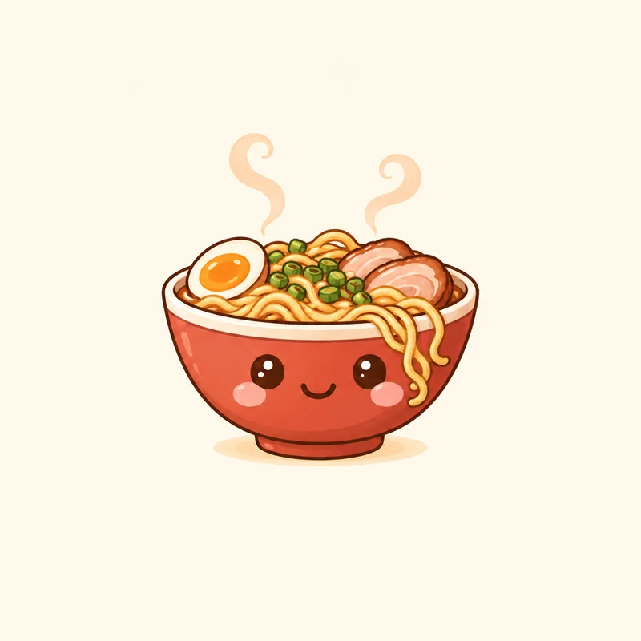
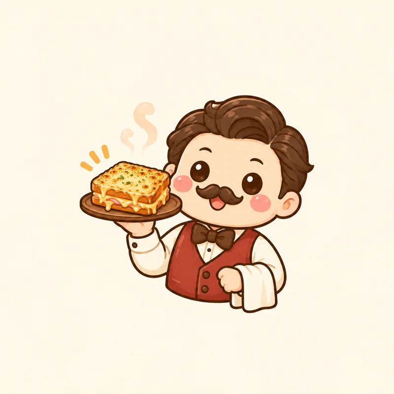

QRamen — bol de ramen
Thème clair
20 px 32 px

Thème sombre20 px 32 px
Illustration complète et variante vectorielle compacte, sur fonds clair et sombre. Les logos sont également lisibles à 20 px dans l’en-tête.

